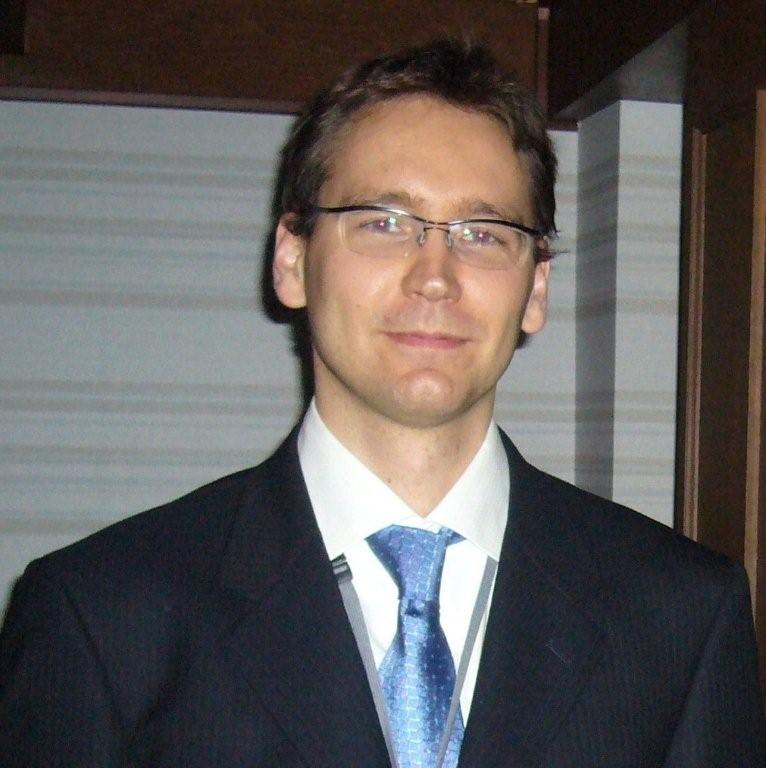

|  | Adam Jatowt | (アダム ヤトフト) |
特定准教授
| 京都大学 | 情報学研究科 | 社会情報学専攻 | 田中研究室 |
Gael Dias, Jose Moreno, Adam Jatowt and Ricardo Campos: Temporal Web Image Retrieval, Proceedings of the 19th International Symposium on String Processing and Information Retrieval (SPIRE 2012), Springer, Cartagena de Indias, Colombia, (2012) {acceptance rate 13/81 = 16%}
Adam Jatowt and Katsumi Tanaka: Large Scale Study of Language Evolution and its Effect on Readability of Historical Documents, Proceedings of the 21st ACM International Conference on Information and Knowledge Management (CIKM 2012), ACM Press, Maui, Hawaii, USA (to appear in 2012)
Ching Man Au Yeung and Adam Jatowt: Studying How the Past is Remembered: Towards Computational History through Large Scale Text Mining, Proceedings of the 20th ACM Conference on Information and Knowledge Management (CIKM 2011), ACM Press, Glasgow, UK, pp. 1231-1240 (2011) [pdf]
Adam Jatowt, Yukiko Kawai and Katsumi Tanaka: Calculating Content Recency based on Timestamped and Non-Timestamped Sources for Supporting Page Quality Estimation, Proceedings of the 26th Symposium On Applied Computing (SAC 2011), ACM Press, Taichung, Taiwan, pp. 1156-1163 (2011) [pdf]
Adam Jatowt, Yukiko Kawai, and Katsumi Tanaka: Page History Explorer: Visualizing and Comparing Page Histories, IEICE Transactions on Information and Systems, Special Issue on Data Engineering, pp. 564-577 (2011) [pdf]
Adam Jatowt, Yukiko Kawai, Hiroaki Ohshima and Katsumi Tanaka: What Can History Tell Us? Towards Different Models of Interaction with Document Histories, Proceedings of the 19th ACM Conference on Hypertext and Hypermedia (HT 2008), ACM Press, Pittsburgh, USA, pp. 5-14 (2008) [pdf]
Adam Jatowt and Ching Man Au Yeung: Extracting Collective Expectations about the Future from Large Text Collections, Proceedings of the 20th ACM Conference on Information and Knowledge Management (CIKM 2011), ACM Press, Glasgow, UK, pp. 1259-1264 (2011) [pdf]
Kensuke Kanazawa, Adam Jatowt and Katsumi Tanaka: Improving Retrieval of Future-related Information in Text Collections, Proceedings of the 2011 IEEE/WIC/ACM Web Intelligence (WI 2011), IEEE Press, Lyon, France, pp. 278-283 (2011) [pdf]
Adam Jatowt, Hideki Kawai, Kensuke Kanazawa, Katsumi Tanaka, Kazuo Kunieda and Keiji Yamada: Analyzing Collective View of Future, Time-referenced Events on the Web, Proceedings of the 19th International World Wide Web Conference (WWW 2010), ACM Press-poster, Raleigh, USA, pp. 1123-1124 (2010) [pdf]
Adam Jatowt, Kensuke Kanazawa, Satoshi Oyama and Katsumi Tanaka: Supporting Analysis of Future-related Information in News Archives and the Web, Proceedings of the 9th ACM/IEEE-CS Joint Conference on Digital Libraries (JCDL 2009), ACM Press, Austin, USA, pp. 115-124 (2009) [pdf]
Adam Jatowt and Katsumi Tanaka: Is Wikipedia Too Difficult? Comparative Analysis of Readability of Wikipedia, Simple Wikipedia and Britannica, Proceedings of the 21st ACM International Conference on Information and Knowledge Management (CIKM 2012), ACM Press, Maui, Hawaii, USA (to appear in 2012)
Kouichi Akamatsu, Nimit Pattanasri, Adam Jatowt, Katsumi Tanaka: Measuring Comprehensibility of Web Pages Based on Link Analysis, Proceedings of the 2011 IEEE/WIC/ACM Web Intelligence (WI 2011), IEEE Press, Lyon, France, pp. 40-46 (2011) [pdf]
Makoto Nakatani, Adam Jatowt and Katsumi Tanaka: Adaptive Ranking of Search Results by Considering User's Comprehension, Proceedings of the 4th International Conference on Ubiquitous Information Management and Communication (ICUIMC 2010), ACM Press, Suwon, Korea, pp. 182-192 (2010) [pdf]
Makoto Nakatani, Adam Jatowt and Katsumi Tanaka: Easiest-First Search: Towards Comprehension-based Web Search, Proceedings of the 18th ACM Conference on Information and Knowledge Management (CIKM 2009), ACM Press, Hong Kong, China, pp. 2057-2060 (2009) [pdf]
Yusuke Yanbe, Adam Jatowt, Satoshi Nakamura and Katsumi Tanaka: Can Social Bookmarking Enhance Search in the Web?, Proceedings of the 7th ACM/IEEE-CS Joint Conference on Digital Libraries (JCDL 2007), ACM Press, Vancouver, Canada, pp. 107-116 (2007) [pdf]
Sakigake (Presto) Research Fund (Japan Science and Technology Agency): "Analyzing Collective Memory and Developing Methods for Knowledge Extraction from Historical Documents" (Duration: 2011-2015)
Microsoft Research Asia Fellowship 2010 (IJARC Collaborative Research Project): "Mining and Searching Web for Future-related Information"
Japanese Ministry of Education, Culture, Sports, Science and Technology Grant-in-Aid for Young Scientists B: "Towards time-focused Web Search and Mining" (Grant#: 22700096; Duration: 2010-2013)
Japanese Ministry of Education, Culture, Sports, Science and Technology Grant-in-Aid for Young Scientists B: "Information Retrieval and Mining in Web Archives" (Grant#: 18700111; Duration: 2006-2009)
Co-organizer of Study Theme: "Redesigning Wikipedia for education: How to make Wikipedia articles better suited for learning?" in Summer Design School 2012, Kyoto
Co-chair of the 2nd Joint WICOW/AIRWeb Workshop on Web Quality (WebQuality 2012) in conjunction with the 21st International World Wide Web Conference (WWW 2012)
PC co-chair of the 8th International Conference on Preservation of Digital Objects 2011 (iPRES 2011)
Co-chair of the Joint WICOW/AIRWeb Workshop on Web Quality (WebQuality 2011) in conjunction with the 20th International World Wide Web Conference (WWW 2011)
Co-chair of the Minitrack Web Information Credibility Analysis at Forty-Fourth Annual Hawaii International Conference on System Sciences (HICSS 2011)
Co-chair of the 2nd, 3rd and 4th Workshop on Information Credibility on the Web (WICOW 2008 WICOW 2009 WICOW 2010)
Executive Committee member of the 1st, 2nd and 3rd International Workshop with Mentors on Databases, Web and Information Management (iDB 2009 iDB 2010 iDB 2011)
PC member of the 28th AAAI Conference on Artificial Intelligence (AAAI 2014)
PC member of the Digital Libraries 2014 Conference [previous ACM/IEEE Joint Conference on Digital Libraries] (DL 2014)
PC member of Workshops Committee of the 7th International Conference on Web Search and Data Mining (WSDM 2014)
PC member of PhD symposium at the 23rd International Conference on World Wide Web (WWW 2014)
PC member of the 14th, 16th, 17th, 18th and 19th Database Systems for Advanced Applications Conference (DASFAA 2009 DASFAA 2011 DASFAA 2012 DASFAA 2013 DASFAA 2014)
PC member of the 1st, 2nd, 3rd and 4th International Temporal Web Analytics Workshop at WWW2011, WWW2012, WWW2013 and WWW2014 (TWAW)
PC member of the 36th Annual International ACM SIGIR Conference on Research and Development in Information Retrieval: short papers track (SIGIR 2013)
PC member of the 13th ACM/IEEE Joint Conference on Digital Libraries (JCDL 2013)
PC member of the 5th Asian Conference on Machine Learning (ACML 2013)
PC member of the 15th international Asia-Pacific Web Conference (APWeb 2013)
PC member of the 12th ACM/IEEE Joint Conference on Digital Libraries (JCDL 2012)
PC member of the 32nd and 33rd Annual International ACM SIGIR Conference on Research and Development in Information Retrieval (SIGIR 2009 SIGIR 2010)
PC member of the 6th, 7th and 9th Asia Information Retrieval Societies Conference (AIRS 2010 AIRS 2011 AIRS 2013)
PC member of the 20th and the 21st ACM Conference on Hypertext and Hypermedia (HT 2009 HT 2010)
PC member of the 23rd International Conference on Computational Linguistics (COLING 2010)
PC member of the Doctoral Consortium at the Joint JCDL/ICADL International Digital Libraries Conference (Doctoral Consortium JCDL-ICADL 2010)
PC member of the 9th and 10th International Web Archiving Workshop (IWAW 2009 IWAW 2010)
ACM, SIGWEB, WIC, IEICE,, IPSJ
Adam Jatowt
京都大学 情報学研究科
〒606-8501 京都市左京区吉田本町
adam {at} dl.kuis.kyoto-u.ac.jp
電話: +81-75-753-5909
Fax: +81-75-753-5979